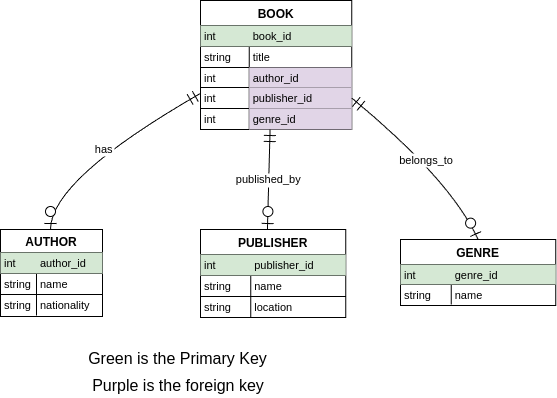

PDF Version Available
This document is also available in PDF format: week4schema.pdf
The PDF version includes bookmarks for easy navigation and is optimized for printing.
Accessibility Notice
This document is also available in HTML format at:
https://aholdengouveia.name/AdvData/labs/week4schema.html
The HTML version provides enhanced accessibility features including keyboard navigation, screen reader support, responsive design, dark mode support, and high contrast options.
Objectives:
- Learn how to evaluate which schema is appropriate
- Create your own schema
Complete the following problems
References, a video, a PowerPoint and some notes are available at my website https://www.aholdengouveia.name/AdvData/databaseschema.html
Pick a topic you're interested in. This could be anything; sports, collectable card games, cars, video games, etc.
Decide on a Schema
- Out of the 6 design option, pick 3 to evaluate, list them here
- For each design option, give 2 pros and 2 cons for your data specifically
- List out some potential data options for your dataset For example, books might have authors, publication dates and publishers, genre, sub genres, purchase types such as audio or ebook, part of a series or world, connections to other books, etc.
- Make a list of what you think some potential tables could be, include a primary key for each table
- Make notes on how the tables might relate to each other using example, list out potential foreign keys, if you have no foreign keys, explain why not.
- Pick which one you think would be best for your given topic and explain why you chose it in one paragraph or less. Include your pros and cons.
Create your schema
The tool that I used is https://app.diagrams.net/ You may use other tools of your choice, but make sure everything is clearly labelled and the image includes your name and term somewhere.
See the attached schema example for an idea of what you should be creating, don't copy it or feel you have to use the same type, pick the one that works best for your data. My example does NOT include all the information you should have, you should have more tables, and a key, maybe some relationship tables instead of short notes, and rules listed out. You are also likely to have more relationship types with your data, I kept my example small so you'd have an idea of what I'm looking for.
- Make sure to include all your tables, there should be at least 4.
- Each table needs to have a labeled primary key.
- You may need to include foreign keys, if you do then label them.
Deliverables
- Document that includes answers to the above questions for deciding on which schema to use
- Document/image of your schema following the above guidelines.
